În stînga este slide-ul din curs, în dreapta aceeași figură, calculată în browser din aceleași date. Butonul ▶ modifică parametrul pas cu pas.
Cînd se mișcă piețele împreună? · Măsurarea covarianței și a incertitudinii ei · GARCH multivariat și DCC · Corelații în criză și distorsiunea Forbes–Rigobon · Copule și dependență în cozi · Aplicații: Europa, România și bănci · Studii de caz: volatilitatea comună globală și DCC în dimensiuni mari · AI pentru descoperire științifică
Cînd se mișcă piețele împreună?
Acțiuni și obligațiuni: o corelație care și-a schimbat semnul
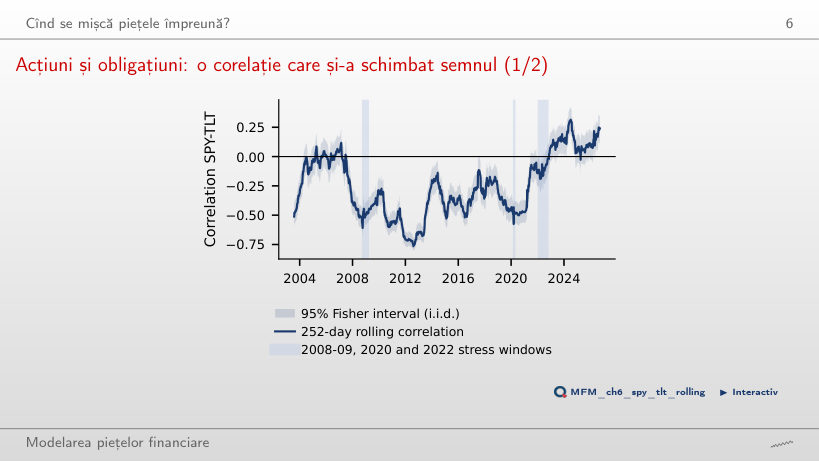
Răspuns
Corelația a devenit pozitivă: înainte de 2022 a fost pozitivă în 6% din zile, iar din ianuarie 2022 în 81% din zile. Șocurile de creștere economică mișcă acțiunile și obligațiunile în sensuri opuse, iar șocurile de inflație, dominante în 2022, le mișcă în același sens.
Măsurarea covarianței și a incertitudinii ei
Corelații zilnice, pe 2 zile și săptămînale, 2000–2026
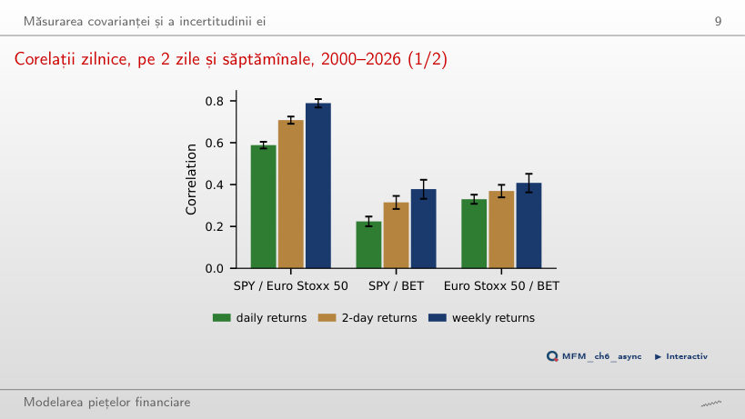
Răspuns
Bursele din zona euro se închid înaintea celei din New York, deci știrile americane de după închiderea europeană intră în prețurile europene abia a doua zi. Corelația din aceeași zi este deplasată spre zero, iar corelația decalată (SPY ieri, Euro Stoxx 50 azi) este 0,20. Pe orizonturi mai lungi, decalajul de o zi cîntărește tot mai puțin.
Intervale Fisher față de HAC: SPY și TLT
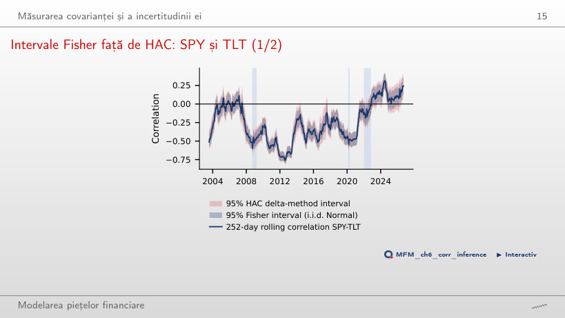
Răspuns
Nu. Formula Fisher presupune perechi i.i.d. cu distribuția Normală bivariată. Cu cozi groase și volatility clustering, intervalul HAC este mai larg (mediana raportului lățimilor este 1,24), iar concluzia testului se schimbă în 8,2% din ferestre. Diferența vine mai ales din momentele de ordinul patru, nu din autocorelație. Și intervalul HAC cere momente de ordinul patru finite, pe care Capitolul 1 le pune sub semnul întrebării: HAC tratează dependența, dar nu compensează lipsa momentelor.
EWMA față de ferestre rolling, SPY–TLT din 2019
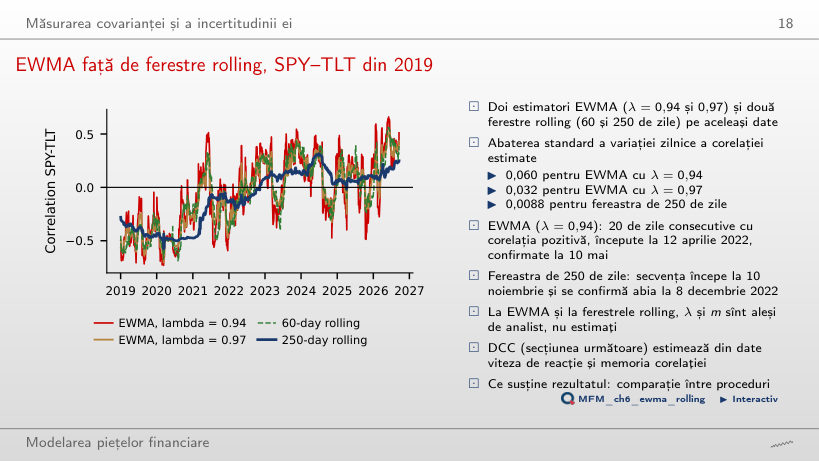
Răspuns
EWMA cu λ = 0,94: secvența de 20 de zile consecutive cu corelație pozitivă începe la 12 aprilie 2022 și se confirmă la 10 mai; la fereastra de 250 de zile începe la 10 noiembrie și se confirmă abia la 8 decembrie 2022. Viteza are un preț: abaterea standard a variației zilnice a corelației este 0,060 pentru EWMA cu λ = 0,94 și 0,0088 pentru fereastra de 250 de zile.
GARCH multivariat și DCC
Corelația DCC dintre SPY și TLT, 2002–2026
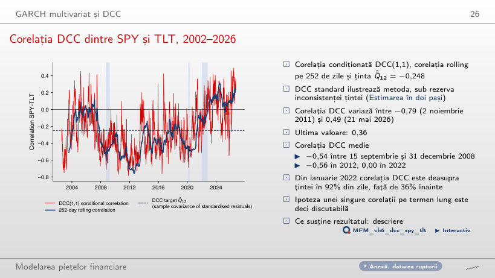
Răspuns
Este persistența corelației: a + b = 0,986; indicatorul euristic ln 0,5 / ln(a + b) dă aproximativ 48 de zile, nu timpul exact de înjumătățire al lui Q_t, deoarece E_t[ε_{t+1}ε_{t+1}′] = R_{t+1}, nu Q_{t+1}. Testul LR față de corelația constantă dă 533,4; bootstrap-ul sub CCC dă p = 0,005, cea mai mică valoare posibilă cu B = 199. Sînt estimări DCC standard, o ilustrare a metodei: cu correlation targeting, ele sînt în general inconsistente.
Aplicație: ponderi de varianță minimă cu DCC
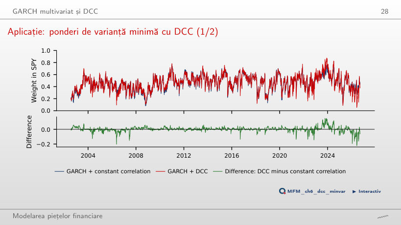
Răspuns
Cu foarte puțin: 9,06% cu DCC, față de 9,10% cu corelație constantă și 10,99% pentru portofoliul 60/40 fix. Cea mai mare parte a cîștigului vine din volatilitățile GARCH. Parametrii sînt estimați pe tot eșantionul, deci comparația este in-sample.
Corelații în criză și distorsiunea Forbes–Rigobon
Creșterea corelației cauzată numai de volatilitate
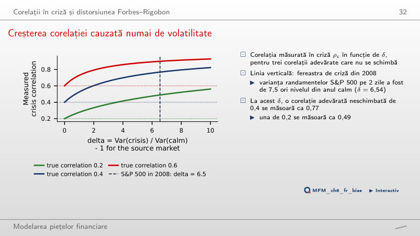
Răspuns
Ca 0,77. Cu δ = 6,54, formula ρ_c = ρ√((1 + δ)/(1 + δρ²)) crește corelația măsurată, deși coeficientul de transmitere β rămîne același. O corelație adevărată de 0,2 s-ar fi măsurat ca 0,49.
2008: corelații de criză brute față de cele corectate

Răspuns
Nu, în ipotezele modelului. Creșterea brută este semnificativă (p = 0,005), dar corelația corectată pentru volatilitate este 0,44, sub nivelul din anul calm (p = 0,93). La BET, 0,48 devine 0,20 (p = 0,55). Cifrele se schimbă cînd deplasăm ferestrele, deci alegerea lor trebuie justificată.
Copule și dependență în cozi
Corelații de depășire: S&P 500 și Euro Stoxx 50
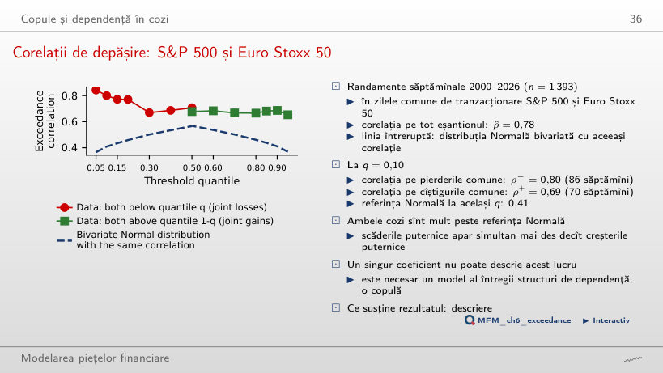
Răspuns
Corelația pe pierderile comune este 0,80 (86 de săptămîni), iar pe cîștigurile comune 0,69 (70 de săptămîni). Distribuția Normală bivariată cu aceeași corelație, 0,78, dă la același prag doar 0,41.
Cinci copule cu același tau al lui Kendall
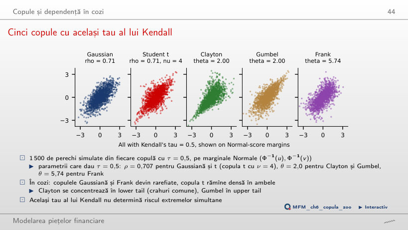
Răspuns
Nu. Copulele Gaussiană și Frank au λ_L = 0. Copula t cu ν = 4 are λ_L = λ_U = 0,40, Clayton are λ_L = 0,71, iar Gumbel are dependență doar în upper tail, cu λ_U = 0,59.
De la reziduuri la pseudo-observații: JPM și BAC
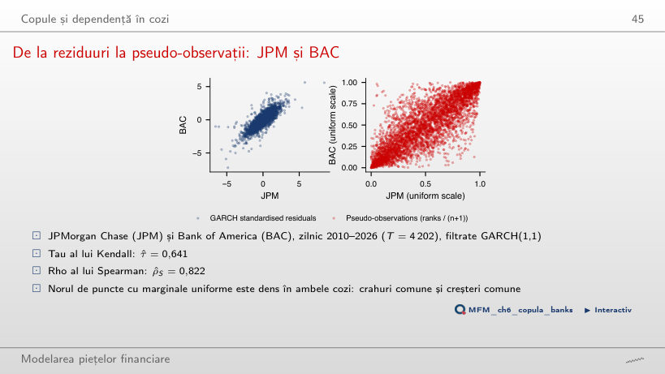
Răspuns
Copula presupune observații i.i.d.; filtrul GARCH elimină volatility clustering, care altfel s-ar amesteca cu dependența. Rangurile împărțite la T + 1 dau marginale uniforme fără să alegem o distribuție marginală. Măsurile de rang nu depind de marginale: pentru JPM și BAC, τ = 0,641 și ρ_S = 0,822.
Estimările copulelor și adecvarea lor: JPM și BAC
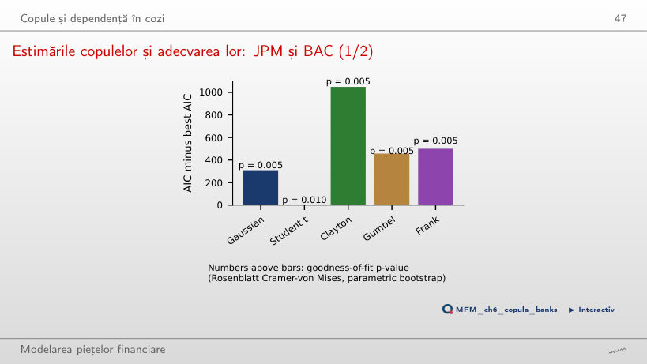
Răspuns
Nu neapărat. AIC doar ordonează familiile. Testul Rosenblatt le respinge pe toate cinci, cu p-value-ul minim posibil; copula t are cea mai mică statistică, 0,082. Pe măsură ce ν crește, copula t se apropie de cea Gaussiană, iar avantajul ei de 309 puncte AIC scade.
Dependența empirică în cozi: JPM și BAC
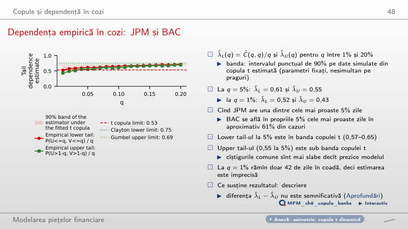
Răspuns
În aproximativ 61% din cazuri (λ_L(0,05) = 0,61), în banda copulei t estimate (0,57–0,65). Upper tail-ul, 0,55, este sub bandă: cîștigurile comune sînt mai slabe decît prezice copula t, care este simetrică.
Aplicații: Europa, România și bănci
Acțiuni din SUA, zona euro și România, 2000–2026
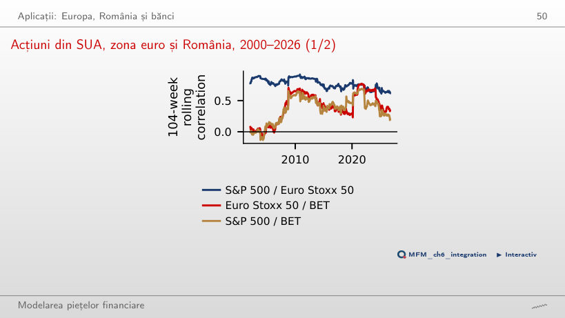
Răspuns
În medie, da: corelația Euro Stoxx 50–BET este 0,33 în 2000–2009, 0,45 în 2010–2019 și 0,61 din 2020. Pe fereastra rolling, corelația urcă în crize (0,76 la sfîrșitul lui 2021) și coboară după aceea (0,34 în septembrie 2026), deci o parte din creștere poate fi distorsiunea de volatilitate Forbes–Rigobon.
Bănci: corelațiile randamentelor săptămînale, 2010–2026
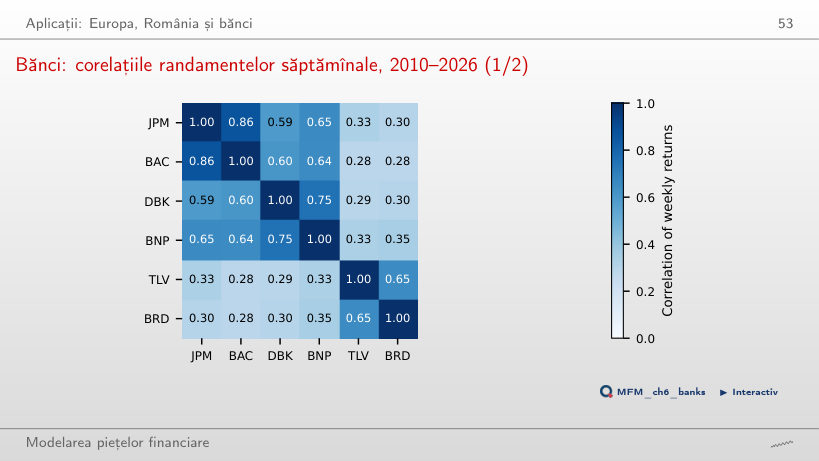
Răspuns
Legăturile cu băncile românești: BNP–TLV 0,33 și JPM–BRD 0,30, față de 0,86 pentru JPM–BAC și 0,75 pentru DBK–BNP. Factorii la nivel de țară (riscul suveran, dobînzile interne, reglementarea) separă sistemele bancare.
Corelațiile dintre bănci în timp
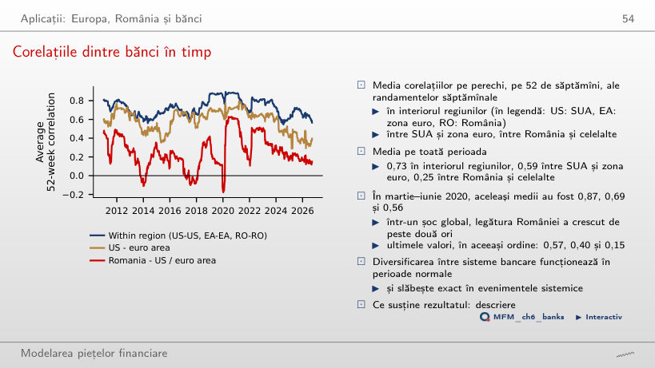
Răspuns
Media corelațiilor pe 52 de săptămîni a urcat la 0,56, față de 0,25 pe toată perioada, adică de peste două ori. Diversificarea între sistemele bancare funcționează în perioade normale și slăbește în șocurile globale.
O rețea de corelații între bănci
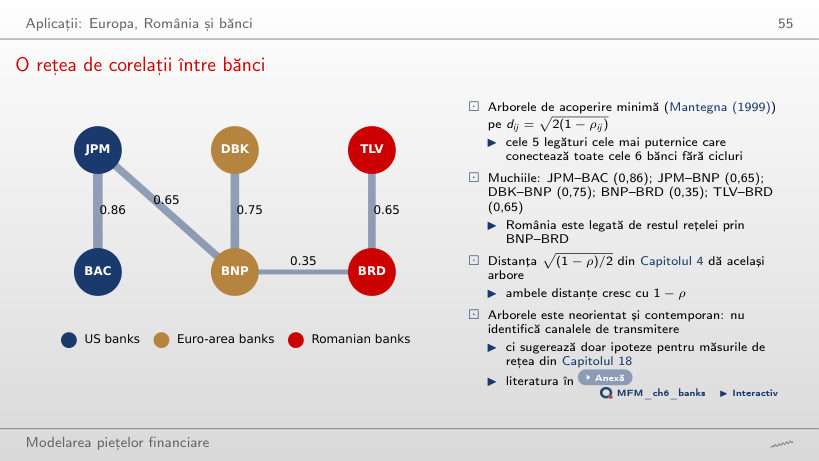
Răspuns
Prin BNP–BRD, cu o corelație de 0,35. Celelalte muchii sînt JPM–BAC (0,86), DBK–BNP (0,75), JPM–BNP (0,65) și TLV–BRD (0,65). Arborele este neorientat și contemporan, deci nu arată direcția transmiterii.
Studii de caz: volatilitatea comună globală și DCC în dimensiuni mari
Estimările DCC cînd crește numărul de active
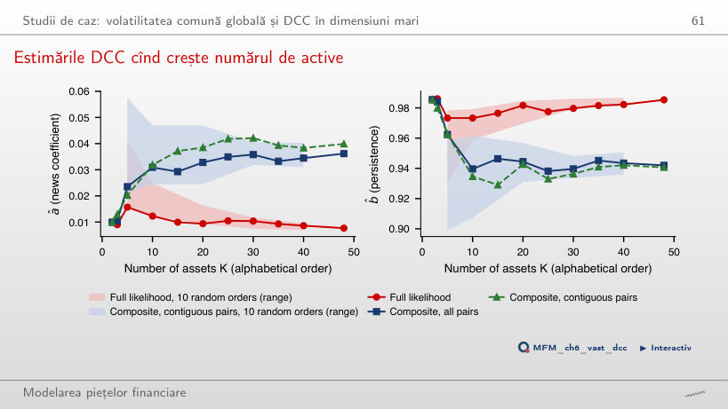
Răspuns
Ținta Q̄ are K(K − 1)/2 corelații estimate înaintea lui (a, b), adică 1 128 la K = 48. Erorile lor se acumulează în verosimilitatea completă și o împing spre corelații aproape constante: â = 0,0077 la K = 48, față de 0,0362 cu CL pe toate perechile. Fiecare termen CL folosește doar un bloc 2 × 2 al țintei. Cu estimările complete, corelația medie a celor 48 de active are abaterea standard în timp 0,034, față de 0,058 cu CL, iar indicatorul euristic de persistență ln 0,5 / ln(a + b) este 99 de zile, față de 31. Datele singure nu arată care estimare este cea adevărată. Simulările lui Pakel, Shephard, Sheppard și Engle (2021), pentru scalar BEKK și cDCC, susțin avantajul CL în modelele și configurațiile analizate; ele nu demonstrează absența deplasării în această adaptare pe DCC standard.
AI pentru descoperire științifică
Mini-studiu de caz: inflația și corelația acțiuni–obligațiuni
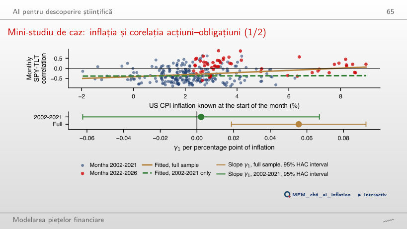
Răspuns
Pe tot eșantionul panta este 0,056 pe punct procentual de inflație (t = 2,97). Pe 2002–2021 este 0,002 (t = 0,07), cu intervalul HAC de 95% [−0,062; 0,067], care include și panta pe tot eșantionul. Nu găsim dovezi ale unei asocieri pozitive înainte de 2022, dar estimarea este imprecisă, deci ipoteza nu este infirmată. O singură schimbare de regim nu separă nivelul inflației de regimul politicii monetare.
Prețuri zilnice EODHD: SPY, TLT, S&P 500, Euro Stoxx 50, BET și acțiunile JPMorgan Chase, Bank of America, Deutsche Bank, BNP Paribas, Banca Transilvania și BRD; pentru al doilea studiu de caz, cele 48 de acțiuni și ETF-uri listate în SUA din datele cursului cu istoric complet din iulie 2013. Inflația CPI din SUA: U.S. Bureau of Labor Statistics, prin FRED.